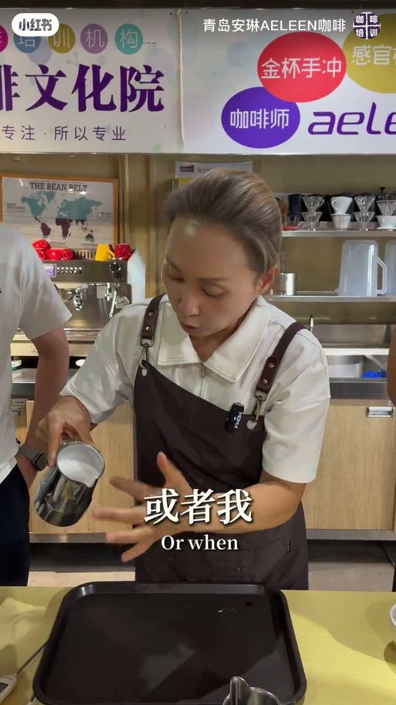
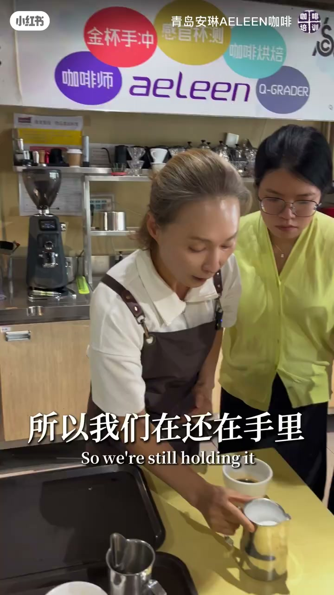
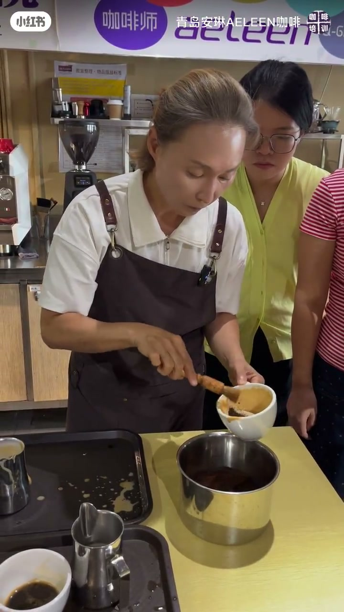
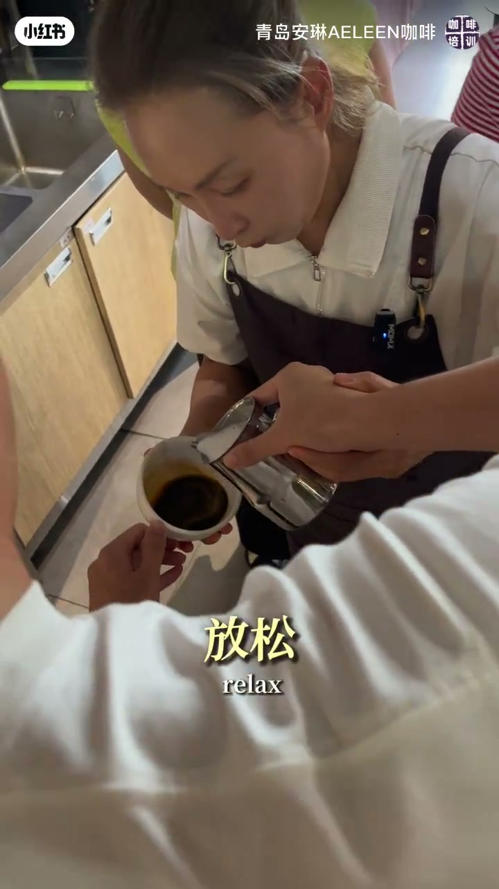

内容要点
一支 4 分 36 秒的大白心拉花进阶课。核心观点：奶缸里的牛奶必须一直拿在手里不断融合，停下 5 秒就会分层失去流动性。围绕这个基础，把拉花拆成三步——油质稳定、液面中心注入、抬高收尾，全程用位置和角度两个关键词解释「什么时候注、什么时候倾斜、什么时候提高、什么时候收尾」。
知识结构
奶缸拿在手里要一直晃动融合，靠奶缸壁摇出大漩涡。停下 5 秒就分层，先倒出来的都是没有奶泡的白色牛奶，拉不了花。
从液面高约 10 公分处（奶泡薄时 5 公分）开始倒，瞄准杯中液面最深的位置，让牛奶和奶泡一起注入咖啡液面下，到六分满前保持稳定不断流。
到一半/六分满时把奶缸放下，从液面中心偏下位置开始注入；收尾时奶缸抬高 5 公分并稍微翘起，流量变小自然收住图案。
放松手腕、杯身倾斜配合注入，逐步抬高收尾。老师强调：只要教给你角度、位置、什么时候注、什么时候倾斜、什么时候提高、什么时候收尾，这就是拉花的全部。
大白心三步法：①奶缸不放手持续融合（靠壁摇出漩涡）；②油质稳定从液面最高 10 公分开始倒、瞄准最深点；③半满后从液面中心偏下注入、结束抬高 5 公分翘缸收尾。精髓是位置和角度。
00:00-01:01牛奶永远不要闲下来
视频开篇强调第一个核心点：「这个奶缸的牛奶，一定要在手里是不要闲下来的，一定要在不断的不断的融合。」打好的奶泡用眼睛看不出大气泡，但一旦静置就会分层。
「如果我倒的时候，牛奶是这么滚下来，拉不了花；或者我倒的时候，奶泡后面倒的时候全是热牛奶的，我也拉不了花。必须它是一个奶泡和牛奶一起进来的。」
「停了 5 秒都分层。」主播现场演示：静置后牛奶分层、没有流动性，先倒出来的是白色牛奶——这是不对的。
「所以我们应该怎么样？看分层了吧，所以我们还在手里摇晃，摇晃的时候靠着奶缸壁摇晃。」「能看到这个的大漩涡」，这是晃动让奶泡和牛奶保持融合的关键。



01:01-02:58三步法：稳定、注入、收尾
「拉花的时候，我们有三个步骤。一个是油质的稳定。」第一步的姿势：从液面高大概 10 公分左右开始倒——「奶泡比较薄的时候也可以 5 公分，最高不要超过 10 公分」。
「那么瞄准在什么位置呢？是液面最深的位置。原理是牛奶和奶泡一起注到咖啡下面去。」注意：说话停顿时奶泡又分层了，所以要先在手里摇匀再开始。
「第二步我们开始注入。注入的时候我们从这边、液面的一半往下再开始注入。」「第三步我们要收尾。收尾的时候，我们把奶缸抬高 5 公分收尾，这时候我的奶缸稍微把它翘起来，流量变小就可以了。」
「第一步融合好，然后注入的时候一定要油质的稳定。稳定到一半到六分满的时候，奶缸放下来，开始注入，提高收尾。这三个步骤。」



02:58-04:36位置与角度就是全部
「油质稳定核心的时候是在哪里呢？最深的位置。不要马上转，稳定做再转。做到一个六分满、一半以上的时候把奶缸放下来。」「放下的时候不要这个开始，是液面的中心、靠下面开始注入。」
「有三个点一定不要忘记：最深的位置；这个时候手臂在动；放下下来。」主播带着学员实际操练：「杯子倾斜……放松，你要很放松……把奶缸放下来，慢慢注入，奶缸提高，收尾。」
「很简单。叫你放松，其实我只要给你们做什么？我只要给你做一个角度、位置。」
「什么时间注、什么时间倾斜、什么时间往上提高、什么时间往回收尾。我只要给你一个这个部分。」——位置和角度，就是拉花技术的全部秘密。


完整转录（151段）
以下文本由 Whisper medium 模型自动转录，可能存在少量识别误差，已尽可能修正。
泡打完之后我们会看到
我们用眼睛是看不到大气泡
然后我们做拉花的时候
第一个核心的点
这个奶缸的牛奶
是一定要在手里是不要闲下来
这个一定要在不断的不断的融合
在这融合
为什么我在做拉花的时候
这个牛奶是这样有流动性的
我们可以看到
这种有流动性才可以的
如果我倒的时候
这个牛奶是这么滚下来
拉不了花
或者是我倒的时候
奶泡后面倒的时候全是热牛奶的
我也拉不了花
必须它是一个奶泡和牛奶
是一起进来的
这个都不可以
为什么已经开始分层了吧
停了5秒都分层
这个就分层了
没有流动性
明白吧
所以应该怎么样
看分层了吧
所以我们还在手里摇晃
摇晃的时候在靠着奶缸壁摇晃
能看到这个大漩涡
这是摇晃
可以看到了吧
这是第一
拉花的时候
我们有三个步骤
一个是油质的稳定
我们可以看到这个姿势
大概从液面高到10公分左右
但奶泡比较薄的时候
也可以5公分
最高不要超过10公分
那么瞄准在什么位置呢
是这个位置
这个最深的位置
原理是牛奶和奶泡
一起注到我的咖啡下面去
放下来
所以我们第一个
刚才我们说话的时候
这个奶泡已经分层了
所以一开始倒的是这种
白色的一些牛奶
所以这是不对的
明白吧
所以我们第一步是油质的稳定
第二步我们开始注入
注入的时候我们从这个边
从这个和这个
液面的一半往下再开始注入
这是第二步
第三步我们要收尾
收尾一定要做到这个动作
收尾的时候
我们是把奶缸抬高5公分收尾
这时候我的奶缸稍微把它翘起来
流量变小就可以了
我们重新
那么这个牛奶泡的时候
我们可以倒在我的奶缸里面
再练习一下
把这个稍微放下一点点
第一步
融合好
然后注入的时候
一定要油质的稳定
这叫油质稳定
油质稳定
稳定到一半到六分满的时候
奶缸放下来
开始注入
提高收尾
这三个步骤
第一
油质的稳定
油质稳定核心的时候
是在哪里呢
最深的位置
不要马上转
稳定做再转
做到一个六分满
一半以上的时候把奶缸放下来
放下来的时候不要这个开始
在哪里呢
是这个液面的中心
在靠下面开始注入
有三个点一定要不要忘记
最深的位置
这个时候我们手臂在这个在动
放下来
能看得出来
所以我们练这个三个步骤
油质稳定
稳定稳定稳定之后
奶缸放下来
开始找个注入的点
提高收尾结束
三个步骤
在手里融合
大圈融合
比如说
看到漩涡
不要快
慢一点也可以
但是一定要
都
对对
慢一点
但是大圈
能看到就流动性看到了吧
奶缸抬起来
把杯子抬起来
面对着我
杯子倾斜
我只是
握着你这个手
刚才这个部分
对这样子
放松
放松你要很放松
很放松
放松非常好
把奶缸放下来
慢慢
注入
奶缸提高
收尾
很简单的
叫你放松
其实我只要给你们做什么
我只要给你做一个
角度
位置
所以什么是重要
位置和角度
什么时候注
什么时候倾斜
什么时候往上提高
什么时候往回收尾
我只要给你一个这个部分
我只要给你一个这个部分